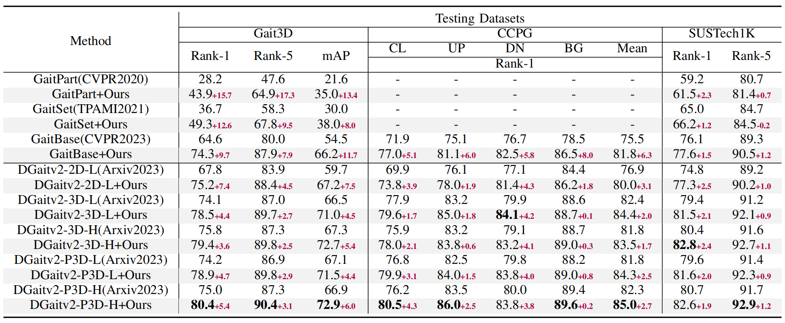

TL;DR
Abstract
Gait recognition is emerging as a promising and innovative area within the field of computer vision, widely applied to remote person identification. Although existing gait recognition methods have achieved substantial success in controlled laboratory datasets, their performance often declines significantly when transitioning to wild datasets. We argue that the performance gap can be primarily attributed to the spatio-temporal distribution inconsistencies present in wild datasets, where subjects appear at varying angles, positions, and distances across the frames. To achieve accurate gait recognition in the wild, we propose a skeleton-guided silhouette alignment strategy, which uses prior knowledge of the skeletons to perform affine transformations on the corresponding silhouettes. To the best of our knowledge, this is the first study to explore the impact of data alignment on gait recognition. We conducted extensive experiments across multiple datasets and network architectures, and the results demonstrate the significant advantages of our proposed alignment strategy. Specifically, on the challenging Gait3D dataset, our method achieved an average performance improvement of 7.9\% across all evaluated networks. Furthermore, our method achieves substantial improvements on cross-domain datasets, with accuracy improvements of up to 24.0\%.
Introduction
Comparisons with the State-of-the-art
The proposed data alignment strategy consistently improves the performance of existing methods across all three datasets, with particularly significant effects observed on the more challenging wild dataset, Gait3D.
Visualization of Alignment
We present the visualizations of the aligned silhouettes and GEIs: